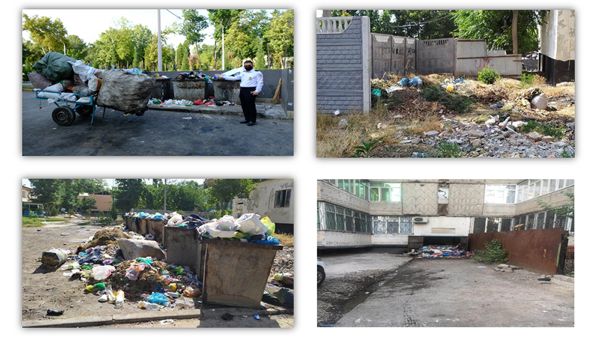
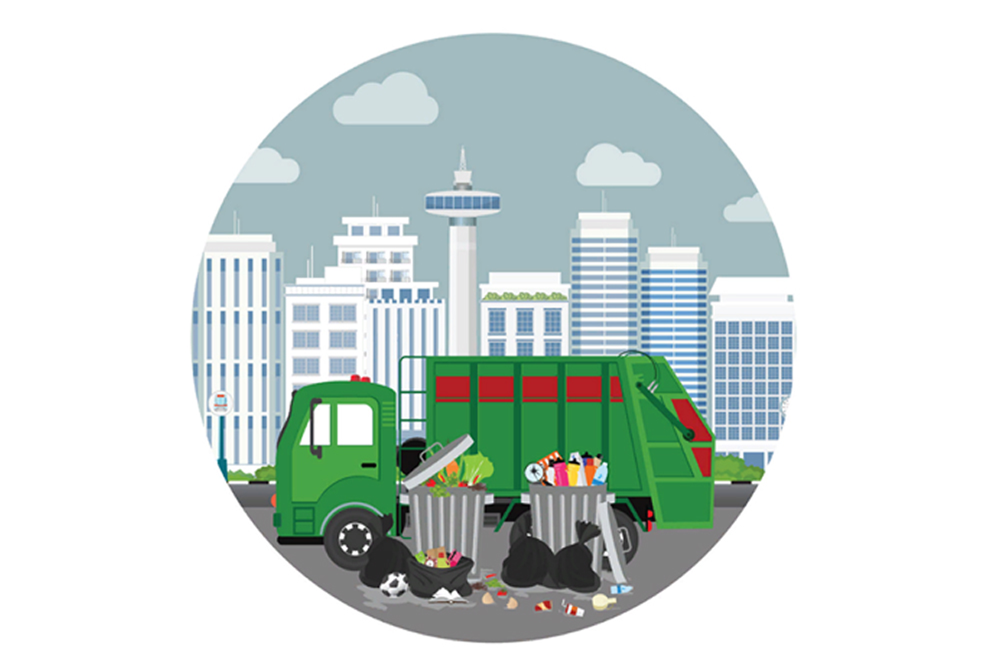
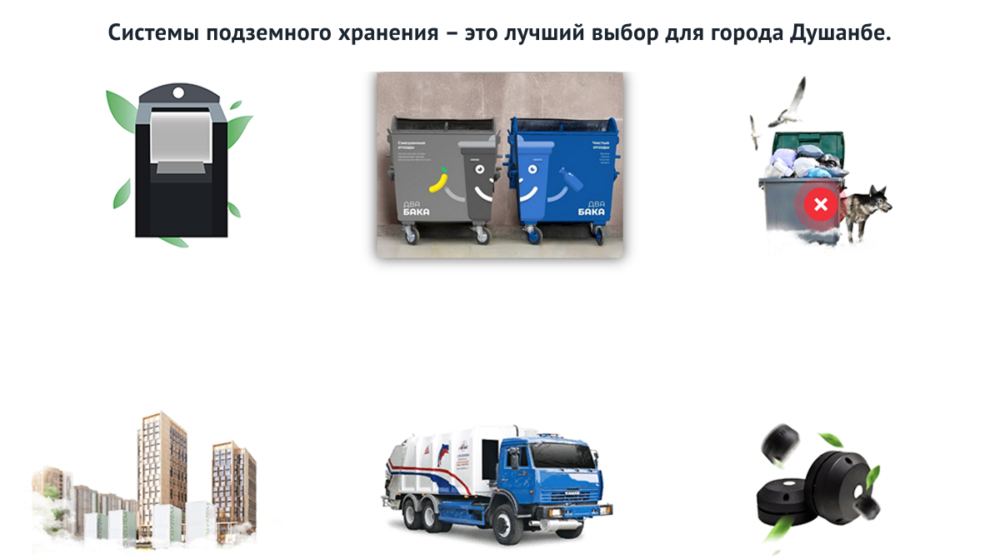
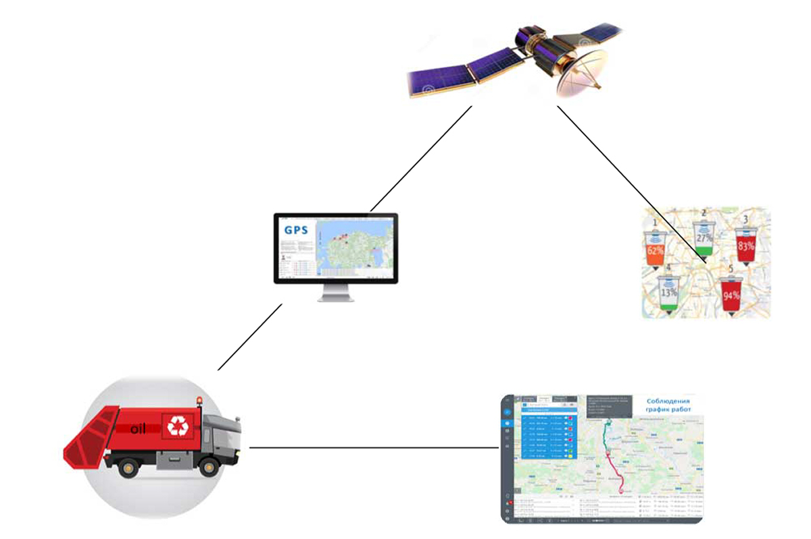
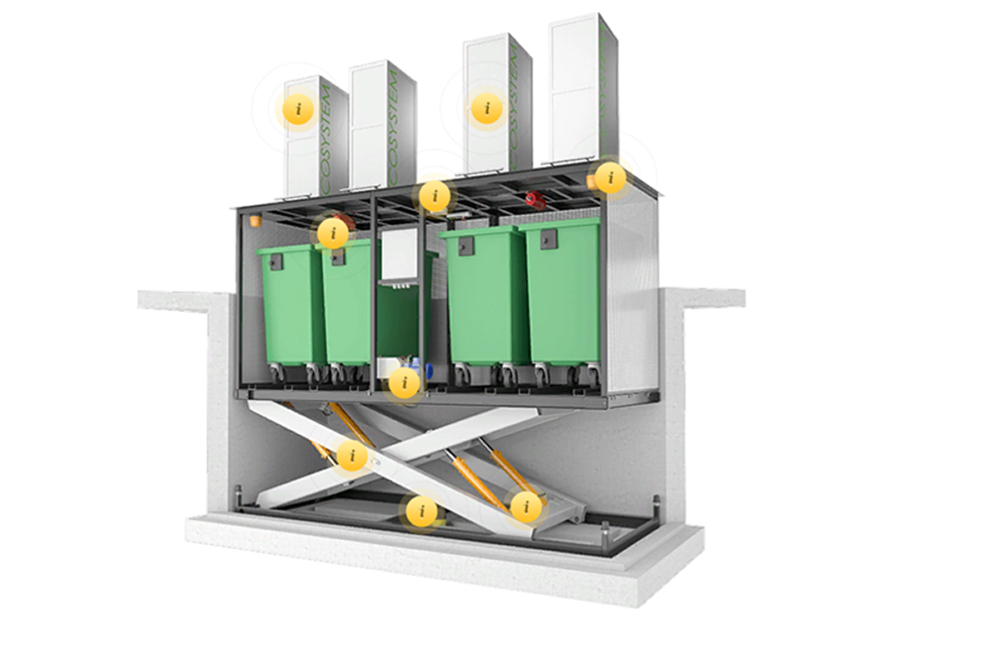

Умная экология
- улучшение экологической ситуации в городе, повышение качества и достоверности оценок состояния окружающей среды, улучшение информирования населения за счет применения цифровых технологий.
- обеспечение прозрачности управления, предупреждения и выявления правонарушений в сфере экологии посредством цифровых технологий;
- обеспечение раздельного сбора и эффективной утилизации промышленных и твёрдых коммунальных отходов;
- повышение эффективности использования природных ресурсов города;
- адаптация к климатическим изменениям.
Умное правительство: структура и взаимодействие
В 2019 году администрация нашего города при щедрой поддержке Европейского банка реконструкции и развития (ЕБРР) в рамках его программы «Зеленые города» начала процесс разработки Плана действий «Зеленый город” (ПДЗГ).
Результатом процесса ПДЗГ является данный итоговый отчет, который позволяет нам определить, расставить приоритеты и решить наиболее острые экологические проблемы Душанбе, включая управление твердыми отходами, воду и сточные воды, городской транспорт и энергоэффективность зданий. Наш ПДЗГ предлагает 27 действий, которые могут содействовать городу в решении этих проблем, одновременно способствуя действиям по борьбе с изменением климата, социальной инклюзивности, а также решениям умного города.
Данный ПДЗГ опирается на руководящие стратегии центрального правительства и администрации города, включая Национальную стратегию развития Таджикистана до 2030 года и Программу социально-экономического развития Душанбе до 2025 года. Целостный подход, используемый в ПДЗГ, облегчает действия по созданию зеленого города во всех соответствующих секторах. Это может поддержать различные центральные и местные ведомства, агентства и государственные унитарные предприятия в сотрудничестве с частным сектором и гражданским обществом в разработке и реализации амбициозных, но вполне осуществимых инвестиций в инфраструктуру и институциональных улучшений.
Города являются динамичной и жизненно важной частью общества — они являются основными двигателями социального, экономического и технологического развития. По данным ООН, около половины населения мира сегодня проживает в городах. Чтобы обеспечить население огромным количеством востребованных услуг, города нуждаются в больших объемах ресурсов. Как таковые, города являются источником значительного воздействия на окружающую среду. Для решения этих проблем ЕБРР разработал программу «Зеленые города», целью которой является построение лучшего и устойчивого будущего для городов и их жителей.
Город Душанбе присоединился к программе «Зеленые города» в 2019 году, взяв на себя обязательство разработать план действий «Зеленый город» (ПДЗГ) в рамках кредита ЕБРР на модернизацию и восстановление системы централизованного теплоснабжения города. ПДЗГ — это недавнее начинание города Душанбе, направленное на решение экологических, социальных и экономических проблем и реализацию потенциала низкоуглеродного и устойчивого к изменению климата развития. ПДЗГ соответствует ключевым целям национальной политики и политики на уровне города, таким как Национальная стратегия развития Таджикистана на 2015-2030 годы и Программа социально-экономического развития города Душанбе до 2025 года.
GCAP проводит комплексную оценку Душанбе с акцентом на семь городских секторов: энергетика, водоснабжение и сточные воды, транспорт, здания, промышленность, твердые отходы, а также землепользование и биоразнообразие. ПДЗГ должен стать динамичным документом — пошаговым руководством для городских чиновников, сотрудников правительства и городских практиков по решению приоритетных экологических задач города и реализации целевых зеленых инвестиций в «жесткие» (т.е. инфраструктура) и «мягкие» (т.е. политика, системы, потенциал) решения.
Энергетика
Поддержка перехода к устойчивой энергетической системе, которая обеспечивает надежное электроснабжение и отопление, а также доступ к ресурсоэффективным технологиям с меньшим воздействием на окружающую среду.
Модернизация и расширение энергоэффективности городского уличного освещения.
Проведение исследования для оценки вариантов использования более чистого топлива для угольных ТЭЦ, включая рассмотрение замены на биомассу.
Реконструкция более 20 угольных котельных.Модернизация и расширение комбинированной сети тепло- и электроснабжения, подстанций и соответствующих инфраструктур для увеличения качества услуг и повышения устойчивости.
Водоснабжение и сточные воды
Расширение и модернизация систем водоснабжения и водоотведения для всех пользователей, чтобы обеспечить доступ к стабильным и ресурсоэффективным круглосуточным услугам, с функционально осуществимым тарифным режимом.
Восстановление и расширение сети водоснабжения в ключевых районах города.
Реконструкция и расширение канализационной сети в ключевых районах города, а также модернизация и реконструкция станции очистки сточных вод с интегрирацией системы получения энергии из отходов.
Разработка институциональной программы и программы развития потенциала для решения проблем с: отсутствием доходов в данном секторе; обслуживанием клиентов и доступности ресурсов; а также устойчивой эксплуатации и технического обслуживания систем водоснабжения и водоотведения.
Инвестиции в развитие «зелено-серой» инфраструктуры в зонах риска наводнений для улучшения благоустройства общественных пространств и повышения устойчивости к изменению климата
Транспорт
Улучшение транспортного планирования и инвестиций для поддержки интегрированной и безопасной транспортной системы, которая обеспечит: улучшенное транспортное сообщение, более эффективный доступ к различным моторизованным и немоторизованным видам транспорта, а также сокращение выбросов углерода и загрязнения воздуха.
Обзор и модернизация существующего транспортного генерального плана, с упором на общественный транспорт, немоторизованный транспорт и электромобили. А также, повышения безопасности и комфорта пассажиров, и более строгого контроля за окружающей средой.
Разработка пилотных транспортных проектов с акцентом на: немоторизованный транспорт; приоритезация людей с ограниченными возможностями; использование электромобилей; поддержка в инфраструктуре, обучении и инвестиционная поддержке транспортных предприятий.
Разработка стратегии мобильности в центре города для поддержки пешеходной и велосипедной инфраструктуры и мультимодального транспортного узла.
Внедрение системы скоростного автобусного сообщения (САС) на основных маршрутах в соответствии с обновленным генеральным транспортным планом.
Строительство
Оптимизация модернизации стареющих многоквартирных домов (с приоритетом на сохранения социальной активности у жителей) для обеспечения доступного жилья наряду с повышением осведомленности и стимуляции инвестиций в экологичное (зеленое) строительство.
Разработка и принятие комплексной программы по предоставлению доступного жилья.
Осуществление программы переоборудования территорий советских многоэтажных жилых домов в сочетании с модернизацией социальной и экологической инфраструктуры.
Улучшение процесса получения разрешений с целью увеличения масштабов учета энергоэффективности в строительстве и модернизации зданий
Стимулирование использования солнечных тепловых систем и энергоэффективного освещения для общественных и частных зданий, используя муниципальные, общественные здания в качестве демонстрации эффективности данных проектов.
Землепользование и биоразнообразие
Улучшение сохранения и эффективного использования земельных ресурсов с целью: сокращения выбросов парниковых газов; повышения устойчивости к изменению климата и рискам стихийных бедствий; усиления контроля за развитием; и усовершенствования взаимодействия с заинтересованными сторонами.
Укрепление потенциала ключевых муниципальных департаментов в области комплексного, ресурсоэффективного и инклюзивного городского развития и планирования инфраструктуры с помощью прикладных программ обучения и определенных специализированных учебных поездок
Разработка программы сохранения зеленых насаждений и улучшения биоразнообразия для направления инвестиций в целевые районы с целью развития потенциала и финансовой поддержки для участия местного населения.
Усиление контроля за развитием и управление земельными ресурсами в городских, пригородных и сельских районах в направлении совместных, экологически богатых и устойчивых к климату планов развития в масштабе микрорайонов, основанных на более общедоступных городских планах и программах.
Установление оборудования для экологического мониторинга качества воздуха, земли и воды в ключевых точках города. А также облегчение доступа граждан и компагий к данным общедоступными путями ( через онлайн-платформу), чтобы увеличить осведомленность граждан и компаний о лучших природоохранных практиках.
Промышленность
Разработать стратегию и создать фонд и инновационную платформу для развития предпринимательства и промышленности, ориентированных на экологию.
Разработка процессов «зеленых» закупок для улучшения экологических показателей в государственном и частном секторе.
Улучшить отделение экологически уязвимых земельных ресурсов от значительно загрязняющих пользователей.
Твёрдые отходы
Разработать и внедрить систему отбора отходов со свалки, включая сортировку, переработку и регенерацию.
Запустить переработку и повторное использование отходов строительства и сноса по всему городу.
Строительство нового санитарно-технического полигона, закрытие и восстановление существующего полигона для захоронения отходов. отделение экологически уязвимых земельных ресурсов от значительно загрязняющих пользователей.
Приведенные выше действия представляют собой следующий шаг в разработке устойчивого и выполнимого плана, включающего ряд существующих стратегий и целевых инвестиций, который обеспечит целостный подход к планированию зеленого города, подчеркивая экологическую устойчивость и одновременно обеспечивая реальное улучшение условий жизни и работы населения Душанбе.
Правила сбора и вывоза бытовых отходов.

Более 315тыс. тонн отходов за 2019 года, (согласно данным ГУП “Свалка твёрдых бытовых отходов”).

- р. Сино: — 111 201.24;
- р. Шохмансур: — 48 389.26;
- р. Фирдавси: — 63 568.98;
- р. И. Сомони: — 42 865.64;
- Другие организации: — 49 169.98;
- Итого: — 315 195.10.
Текущее состояние точки сбора мусора в некоторых районах города Душанбе.
Проблемы с мусороуборочных контролем техники в предприятиях.
Своевременная уборка и вывоз мусора имеет первоочередное значение в данной сфере деятельности, так как нарушение расписания может привести ко многим неприятным последствиям. Так же очень важно, чтобы мусоровоз не только вовремя забрал мусор в заданных местах — но и вывез его в специально отведенный пункт назначения на свалку.
Система мониторинга мусоровозов как раз и внедряется чтобы решать эти и другие проблемы:
- Пропуски площадок с мусорными контейнерами;
- Не соблюдение графика работ;
- Отклонения от маршрута.
Построение маршрутов, автоматизированный контроль соблюдения графиков и качества сбора ТБО, содержания мест накопления.
Автоматическое построение маршрутов согласно условий договоров с потребителями.
Построение маршрутов в ручном режиме.
Автоматическое выявление переполнения контейнеров, наличия отходов возле контейнеров, отсутствия подъезда к месту накопления ТКО.
Автоматизация инвентаризации и состояния контейнеров.
Мобильное приложение водителя мусоровоза.
Автоматизация ведения путевых листов.
Система датчиков наполнения контейнеров.
Место сбора мусора всегда чистое и лишено неприятного запаха от разложения отходов.
У вас есть возможность раздельного сбора мусора, это экологично и экономически выгодно.
Контейнеры спрятаны под землёй, а значит, мусор не разносится животными, птицами и бездомными собаками.
Экономия места на территории, эстетичный внешний вид, хорошо вписывающийся в окружающую среду.
Система рассчитан под стандартные контейнеры, для их вывоза не требуется обновление автопарка.
Все баки снабжены системой оповещения о заполненности, поэтому не возникнет проблема со своевременным вывозом.
Система датчиков наполнения контейнеров.
Как система работает?
GPS — контроль мусоровозов позволит следит за:
- местами загрузки мусора и его разгрузки;
- соблюдения маршрута передвижения;
- расход топлива;
- соблюдением графика работ. загрузки мусора и его разгрузки;
Функциональная система и монтаж. Системы сбора мусора.
- Мусороприемные урны с контролем заполняемости баков;
- Возможность раздельного сбора мусора;
- Диодное освещение зоны для обслуживания;
- Проблесковый сигнальный маячок;
- Автоматическая система пожаротушения. Датчик огня дыма;
- Гидравлическая станция;
- Антикоррозийная зашита всех металлоконструкций;
- Автоматическая система водоотведения;
- Гидравлическая станция.
Монтаж системы «под ключ».
Подготовка бетонного приямка и подводка к нему всех необходимых коммуникаций (канализационной труба, электрокабель).
Монтаж гидравлического подъемника. Монтируем металлический каркас со щитом, который выполняет функцию крышки шахты и всей системы, к которому крепятся мусороприемники.
Устанавливаем подъемную систему и аппаратную зону в бетонный котлован.
Подключаем насос для откачки воды из приямка, систему контроля заполнения баков и пожаротушения, а так же, монтируем стойку административного поста, в которой размещен пульт управления конструкцией.
Результат внедрения.
После установки системы мониторинга на мусоровозы, владельцы мусороуборочных предприятий смогут получить ощутимый экономический и логистический результат:
- Сокращение расходов на топливо, за счет исключения его хищения;
- Посещение всех точек забора мусора;
- Разгрузка мусора только в разрешенном месте;
- Повышение дисциплины сотрудников.
Свежие записи
Встреча ГУП «Умный город» с компанией VINAFORE INFORMATICS AND TELECOMMUNICATION JSC Как таджикской компании открыть офис на рынном языке Встреча директора ГУП «Умный город» с Постоянным представителем Азиатского банкаразвития в Республике Таджикистан Санпропин «Энергo» установит по 46 адресам в Москве до конца года В Москве открыт кабинет зарядка электромобилей с просунской способностью до 500
машин в сутки
Пойтахти Точикистон — шахри Душанбе оинаи тавризу зиндагии миллати точик ва
даъвати точикон аст.
Асосгузори сулҳу ваҳдати миллӣ — Пешвои миллат, Президенти
Чумҳурии Точикистон муҳтарам Эмомалӣ Раҳмон